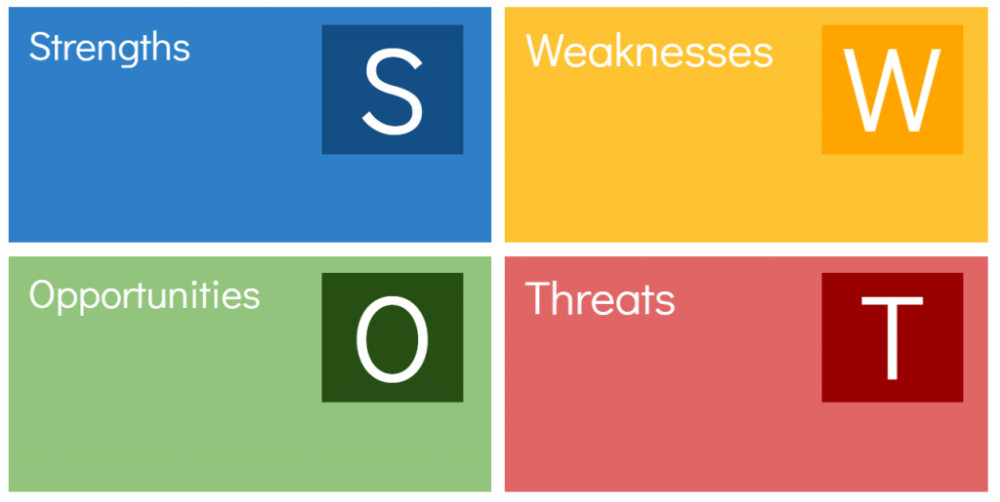
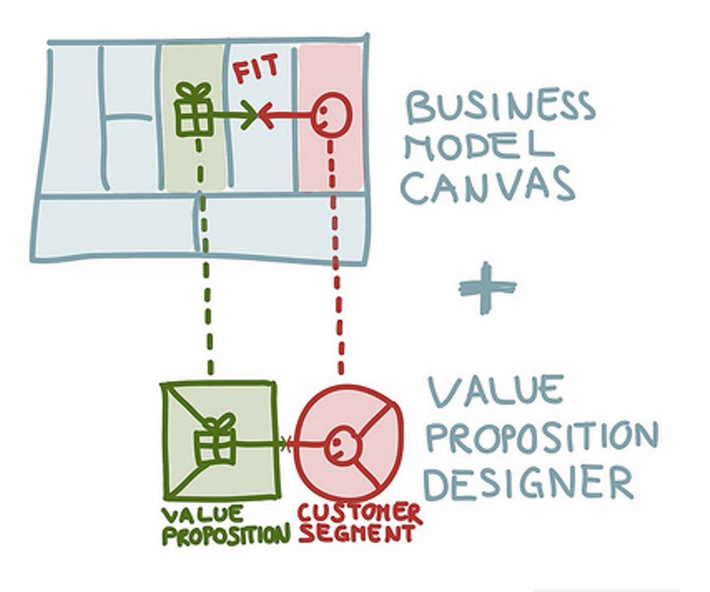
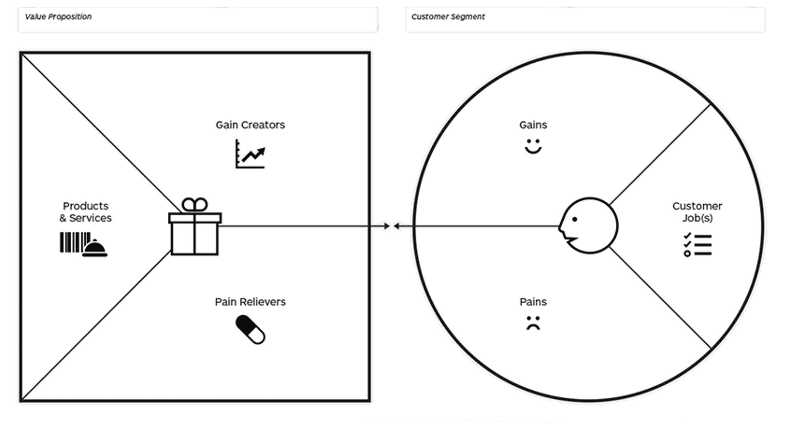

Virksomhedens forretningsmæssige grundlag
Som multimediedesigner er det nødvendigt at lære, hvordan virksomheder fungerer. Årsagerne hertil er, at det er vigtigt at kende virksomhedens profil for at være i stand til at brande den korrekt gennem en forståelse af, hvad det helt præcist er for en virksomhed. En multimediedesigner skal altså kende til virksomhedens type og værdier.
Der findes tre typer virksomheder:
- Produktionsvirksomheder: fremstiller og forarbejder varer.
- Handelsvirksomheder: udelukkende køber og sælger varer. Det vil sige, at de sælger en vare, der er købt hos en produktionsvirksomhed.
- Servicevirksomheder: sælger varer, der ikke kan lagres. Det vil sige serviceydelser såsom konsulentarbejde.
Dog har alle disse virksomhedstyper flere ting til fælles. De har blandt andet alle en idé, et mål, en mission og en vision. Virksomhedens idé, er det der giver virksomheden eksistensberettigelse. Sagt på en anden måde skal virksomhedens idé fortælle, hvilken værdi virksomheden kan skabe for sine kunder. Derfor er virksomhedens idé og mission nært beslægtede, men de adskiller sig ved at missionen er ganske detaljeret. Missionen definerer kundegruppen, behovsafdækker, vejen til at opnå de ønskede resultater og virksomhedens kernekompetencer.
Ligeledes er virksomhedens mål og vision minder på sin vis også om hinanden. Virksomhedens mål definerer realistisk og præcist, hvad virksomheden skal opnå i fremtiden. Virksomhedens vision rækker langt ud i fremtiden, og den skal række udover markedets nuværende muligheder.
Værdigrundlag
Enhver virksomhed med respekt for sig selv har et tydeligt defineret værdigrundlag. Mange nye virksomheder vælger at springe over dette, men et tydeligt værdigrundlag er med til at styre virksomheden i den rigtige retning. Virksomhedens værdigrundlag beskriver virksomhedens samlede værdisæt, der er understøttet af både ledelsen og medarbejderne, da det skal definere, hvad virksomheden helt præcist står for.
Det kræver dog også et strategisk overblik, før det er muligt at arbejde videre med værdigrundlaget – det kan jo være, at der skal ændres nogle ting. Typisk vil man starte med en analysemodel såsom SWOT, der er en sammentrækning af ordene Strenghts, Weaknesses, Opportunities og Threats – på dansk styrke, svagheder, muligheder og trusler.
- Styrker
- Definerer, hvad virksomheden er god til.
- Svagheder
- Fortæller, hvad virksomheden er knapt så god til.
- Muligheder
- Nye muligheder kan eksempelvis komme i form af øget kunders øgede købekraft, nye trends eller øget kapital.
- Trusler
- Trusler kan eksempelvis være en stor konkurrent på markedet, manglende kunder eller lovgivning.
Modellen kigger altså på både ydre og indre faktorer, og det vil altid være vigtigt for en virksomhed at kende til disse, og når virksomheden har gennemgået SWOT-modellen, kan den begynde at analysere på sine resultater. Hvad skal bevares, og hvad skal ændres? Skal virksomheden have anlægge en ny strategi for at udfylde sin mission?
Forretningsplan
En forretningsplan bør ligge forud for opstarten af en virksomhed eller alternativt fastlægges i virksomhedens spæde dage. Uanset hvad bør en virksomhed altid have en forretningsplan. Den skaber et overblik over idéen bag virksomheden og virksomhedens formål. Selvom den typiske virksomhedsejer altid er klar over, hvilken virksomhed de ejer, så hjælper det at have ting på skrift. Det giver nemlig et meget bedre overblik.
Forretningsplanen skal desuden indeholde et realistisk og forventet budget, planer for salg og markedsføring, muligheder for udvikling, men forretningsplanen skal også bevise seriøsisten omkring virksomheden. Banker og investorer vil sjældent tilbyde nogen form for investering, hvis ikke virksomheden er i besiddelse af en forretningsplan.
Forretningsmodel
Forretningsmodellen indgår i en virksomheds forretningsplan, og den skal beskrive, hvordan en virksomhed skal skabe og levere værdi, men også hvordan den skal gøre det. Den skal også indeholde oplysninger om indtægter og omkostninger. Den skal fortælle, hvem virksomhedens kunder er, og hvilke kanaler, der skabes gennem relationen til kunden. Sidst, men ikke mindst, skal den fastslå virksomhedens aktiviteter, ressourcer og samarbejdspartnere. Forretningsmodellen er dog ikke en fast størrelse, og den skal derfor løbende ændres og tilpasses, således at den stemmer overens med virksomhedens og omverdenens virkelighed. Det er altså et værktøj til strategisk brug for virksomheden.
Business Model Canvas
Business Model Canvas er en model, der kan hjælpe virksomheder med at udforme en forretningsmodel. Modellen består af fire rum: kunderummet, værdirummet, produktionsrummet og pengerummet, og modellen tager udgangspunkt i værdirummet, der indeholder virksomhedens eksistensberettigelse.
Værdirummet
Værdirummet består altså af virksomhedens værditilbud, og dette er et vigtigt punkt at kortlægge, da det fortæller, hvorfor virksomheden eksisterer. Eksistensberettigelsen udspringer fra flere dele:
- Nyhed
- Virksomheden skal skabe et produkt, der opfylder et behov hos kunderne, som de ikke selv vidste, at de havde.
- Performance
- Virksomheden skal erstatte et nuværende produkt på markedet ved at skabe et bedre.
- Tilpasning
- Virksomheden skal skabe et produkt eller en service, der matcher et specifikt produkt hos det ønskede kundesegment.
- Design
- Virksomheden skal skabe et produkt, der designmæssigt overgår andre produkter på markedet.
- Status
- Virksomheden kan tilbyde kunderne et produkt, der mindre om andre, men til gengæld for en meget lavere pris.
- Pris
- Virksomheden kan tilbyde kunderne et produkt, der mindre om andre, men til gengæld for en meget lavere pris.
- Risikoreduktion
- Virksomheden skal sammen med produktet tilbyde en form for risikoreduktion, der har til formål at sikre kundetilfredsheden, hvis der skulle opstå et uheld med produktet.
- Tilgængelighed
- Virksomheden kan også sælge et produkt, der giver kunder mulighed for at komme i besiddelse af noget, de ikke kunne før.
Kunderummet
Kunderummet består af tre ting: kundesegmenter, kunderelationer og kundekanaler.
- Kundesegmenter
- Hvem skaber virksomheden værdi for, og hvem henvender virksomheden sig til? Det er vigtigt at kende til sit kundesegment og at kende det godt, da det ellers ikke er muligt at tilpasse sit produkt dertil.
- Kunderelationer
- Hvordan fungerer relationen mellem kunderne og virksomheden, og hvad er kundernes foretrukne relation? Igen er det vigtigt at kende sit kundesegment, da en forkert relation kan får potentielle kunder til at fravælge en virksomhed.
- Langsigtet
- Foretrækker kunderne at have et langsigtet forhold til virksomheden, og skal virksomheden derfor have et stærkt bånd til et fast kundesegment.
- Personlig assistance
- Skal virksomheden være i stand til at tilbyde en personlig dialog med kunden?
- Dedikeret personlig assistance
- Skal virksomheden have personale, hvis formål er at specificere sig i én kunde ad gangen?
- Selvbetjening
- Skal virksomheden give kunderne mulighed eksempelvis selv foretage hele købsprocessen i en webshop?
- Fællesskaber
- Skal virksomheden gøre brug af fællesskaber, der kan løse hinandens problemer og forbedre ting, så det i sidste ende kommer virksomheden til gode?
- Co-creation
- Skal virksomheden have et brugerpanel eller lignende, der gennem personlige præferencer hjælper med at forbedre virksomhedens produkt?
- Transaktionel
- Skal virksomheden blot opfylde et nu-og-her behov for kunden og derved ikke have noget forhold til specifikke personer?
- Kundekanaler
- Hvordan skal virksomheden markedsføre og levere sig selv og sit produkt? Hvis et produkt leveres forkert til potentielle kunder, så kan det få kunderne til at fravælge det og i stedet vælge et lignende produkt fra en anden virksomhed.
Pengerummet
Pengerummet består af omkostningsstrukturer og indtjeningskanaler.
- Omkostningsstrukturer
- Hvilke omkostninger er der forbundet med nøgleaktiviteterne, og hvilke af disse er faste eller variable?
- Indtjeningskanaler
- Hvordan tjener virksomheden penge på salg af sine produkter eller services?
Arketyper
Da de første virksomheder begyndte at supplere sin indtægt ved at oprette en webshop, startede det en ny æra. Flere og flere virksomheder begyndte at oprette en webshop ved siden af en fysisk butik, men i dag ser vi også virksomheder, der udelukkende sælger deres varer eller ydelser gennem en webshop – de har altså ingen fysisk butik. Man skelner derfor mellem de digitale købmænd, der har en webshop ved siden af en fysisk butik og pure players, der udelukkende beskæftiger sig med online handel.
- Den digitale købmand
- har en fysisk butik, men supplerer sin indtjening ved også at sælge gennem en webshop
- Webshoppen
- sælger udelukkende sine varer eller ydelser gennem en webshop
- Den digitale producent
- supplerer sine fysiske produkter med et digitalt tiltag
- Softwareproducenten
- bygger og sælger software mod direkte betaling
- Den digitale platformsbygger
- skaber sin egen online platform
- App-opfinderen
- opdager et behov i omverdenen og skaber en app, der opfylder dette
- Wiki-skaberen
- brugerne både skaber og benytter indholdet, men opdateringer, drift, vedligeholdelse af sitet klares at et fast team
Value Propositions
Når man vil sætte et produkt eller en service til salg, så skal man have gjort sig nogle overvejelser om, hvilke forventninger kunden har. Man skal således udfærdige en beskrivelse af, hvad kunden kan forvente, og denne beskrivelse kaldes value propositions. Modellen af opsat i to dele. Til venstre har man produktet eller serviceydelsen, og til højre har man en kundeprofil. Kundeprofilen skal fremvise, hvilke opgaver, der skal tages stilling til, og hvilke der skal løses, og det giver derfor udtryk for kundens behov.
Disse kundeopgaver har karakter af enten noget funktionelt, socialt eller personligt. Kundeprofilen skal ydermere beskrive pains og gains, der kort fortalt er problemstillinger før brug af produktet, og hvad kunden vil få ud af at bruge produktet. Selve produktdelen i modellen indeholder beskrivelse af, hvilke problemer det løser og derved kundens gevinst af produktet. Ydermere skal der være en beskrivelse af, hvad der helt nøjagtigt skaber en eller flere gevinster for kunden.
Value propositions hjælper med at afstemme produktet i forhold til kunderne. Hvis der er et mismatch mellem de to elementer, så vil produktet ikke være en succes. Hvis produktet eksempelvis koster mange penge, og det hos kunden er ubelejligt, så er det et mismatch, og så skal der justeres forskellige steder, så de to stemmer overens.
